Ten flags
over Ghent.
Beyond Franco-Belgian: a passport of the standout non-local kitchens you can walk to in Ghent in 2026 — omakase in a circus, ramen on Oudburg, a tandoor by the station, mezze on Steendam, tapas in the Patershol. One page per cuisine. Stamps where the canonical record awarded one.
dinnerGent · BE · 9000
Index of stamps
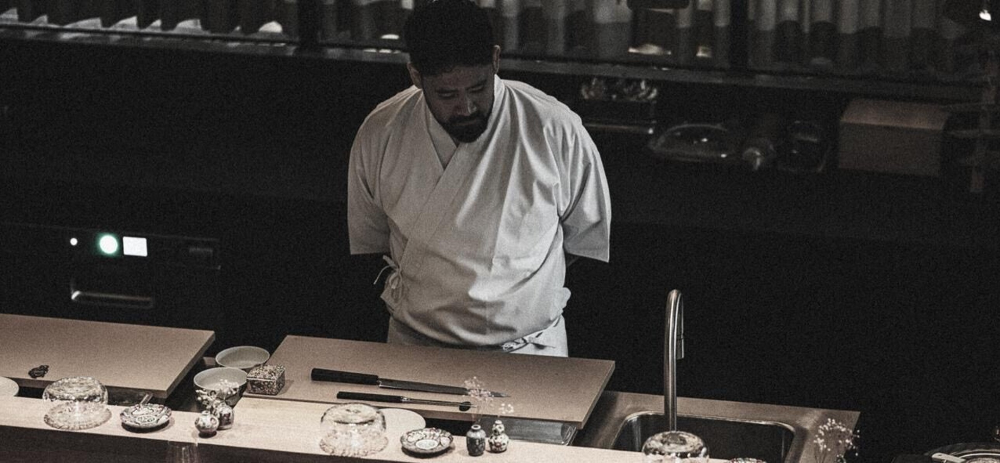
- Port of entry
- Lammerstraat 13, 9000 Gent [1]
- Course count
- 8 or 16 (omakase)
- Chef
- Yoshihito Mizuno (JP / BR / BE)
- Status
- Gault&Millau-listed Ghent [3]
The only true omakase counter in the city, set inside the restored Wintercircus. Belgian press graded the kitchen "impeccable" on quality, freshness and seasoning [2].
★ pick2026 · Gent
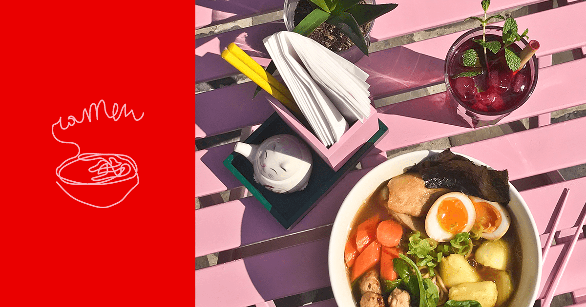
2012Oudburg
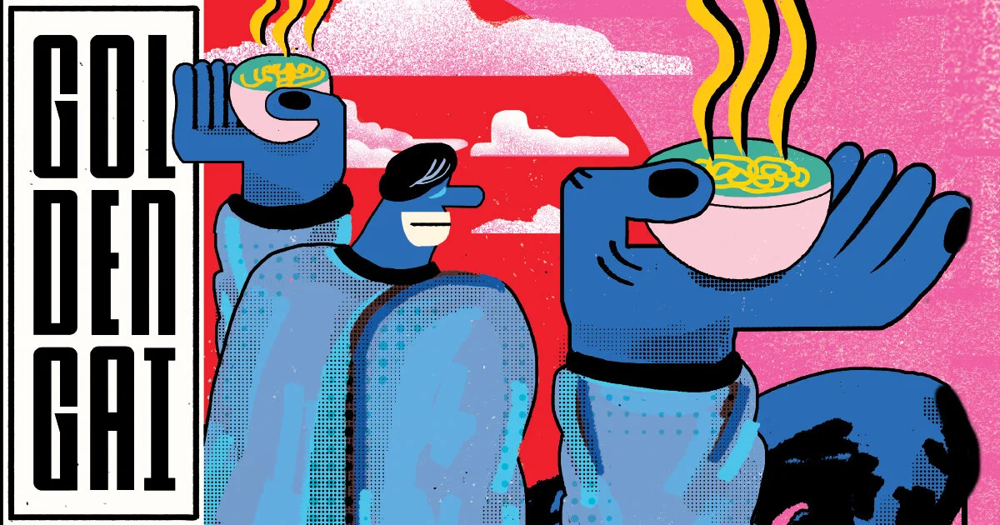
kitchenDampoort
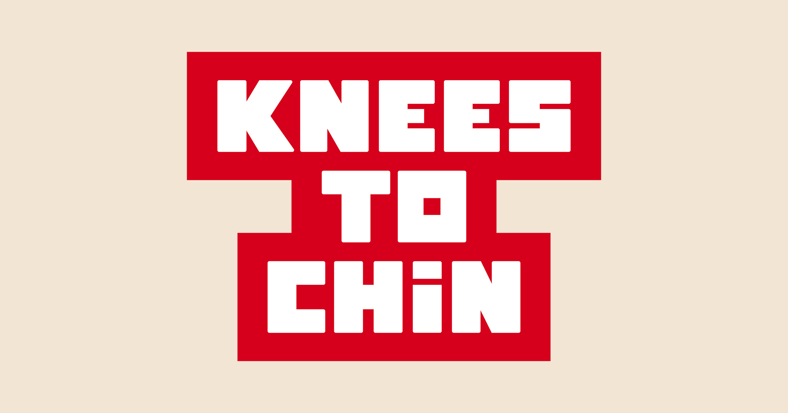
cityGhent · BE
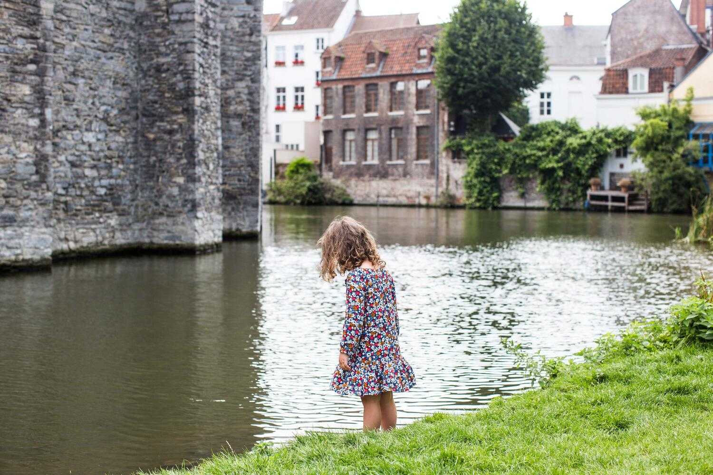
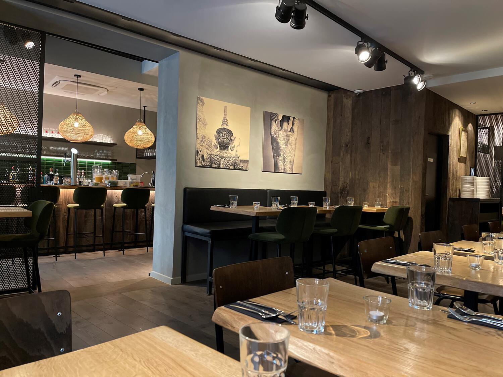
ThaiBE/LU 2020
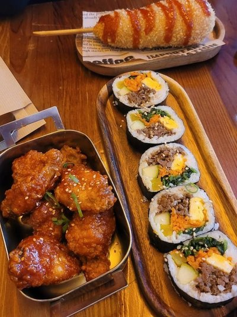
+ veganOudburg
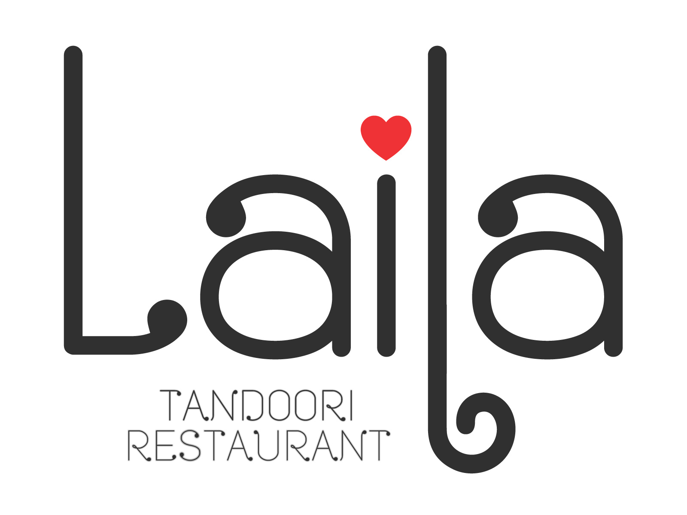
- Port of entry
- Maria Hendrikaplein 66, 9000 Gent [12]
- Award
- 3× HORECA "best kitchen"
- Order
- Tandoori lamb / chicken / prawn · dum biryani
- Logistics
- Steps from Sint-Pieters station
The city's most decorated subcontinental kitchen — three HORECA awards [12], and consistent praise on TripAdvisor for tandoori and biryani [13]. Skews tandoor-heavy.
HORECABest kitchen
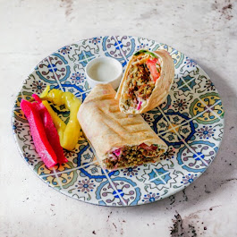
platesSteendam
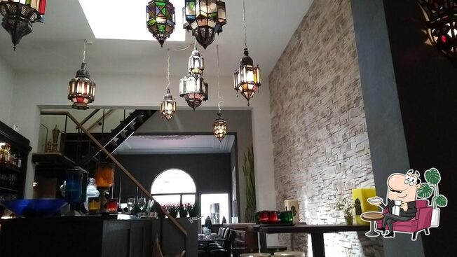
Peak hoursMageleinstraat
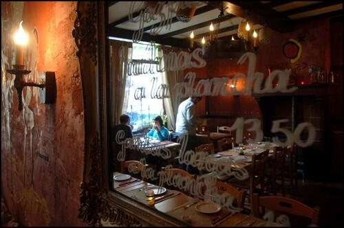
up to 23Patershol
top pickGhent · 2026
Visas refused — what's missing in Ghent (2026)
Ethiopian / Eritrean
No standout address with consistent national press. For injera the nearest reliable room is in Brussels.
Peruvian · Argentinian
Latin-American depth is thin in 2026 — no ceviche or asado venue rises above casual.
Mexican
Mexican exists but no venue rises above casual. Cross-check before booking.
Stamps issued by — sources
Other dining-passport pages — siblings
Michelin & Gault&Millau-rated tables
4 Michelin stars in city limits, a 2-star benchmark 30km away, and where Gault&Millau places everything else.
surveyChef-driven & destination tables
The chefs to book for in Ghent and the drive-out destinations within ~90 minutes.
reconRomantic & special-occasion settings
Six Ghent rooms worth a big night out — from a 24-seat star to candlelit canal-side warehouses.
reconCocktail-led dining & bar-restaurants
Five Ghent venues where the drinks programme is at least as serious as the food.
reconRemarkable locations & rooms
15th-century butchers' hall, a converted Franciscan church, an 1880s warehouse, the city's two real rooftops.
reconReview & rating sources to mine
Which review platforms to scrape for a 'clear edge' Ghent guide, ranked by signal density.